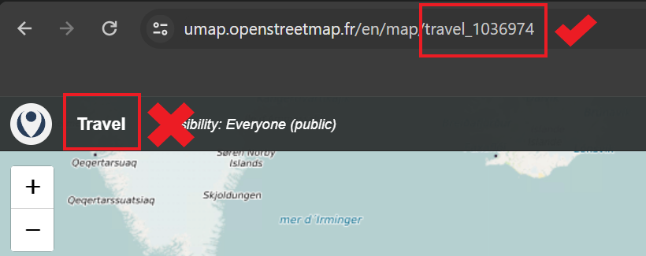

Some commands and issues you might want to know when building a website, including inserting images and resize and center images,adding emoji, travel map, linking to pages and titles, and so on.
How to insert images and resize and center images?
#
Why we need to add ../ in front of images folder, altough hugo.md file and images folder are at the same level?
Because Hugo system sees hugo.md as a foler too. However, Hugo system sees _index.md as a file! Therefore, If we want to insert iamges in _index.md file, the command will be like:
NOTE:
In {{< openstreetmap mapName="<your map name>" >}}, the <your map name> is not the name you give to your map, but the name in the website link of your map. For example, I created a map whose name is Travel, I need to use travel_1036974 in the hugo shortcode.

Why my local website doesn’t update after I update my markdown files?
#
Good question. I also find my local website does not update although I have save my changes. I am not clear the excat reason, but It works well if I Pree Ctrl+C to stop the local host, and hugo server again, I can see the updated website in http://localhost:1313/.
I am in now.md file now, and there is another page.md which has #Title I want to link. I want to link to page.md and link to #Title I want to link.
In page.md file, add an anchor:
# Title I want to link {#anchor}
In now.md file, add commands:
[text] ( {{<ref"./pages.md">}} ) # link to one page
[text] ( {{<ref"./pages.md#anchor">}} ) # link to the title